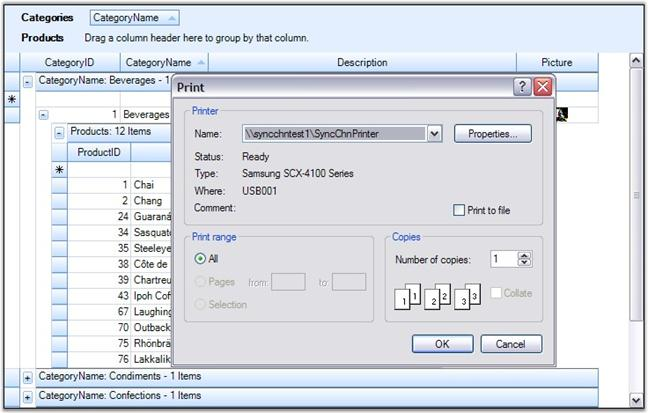
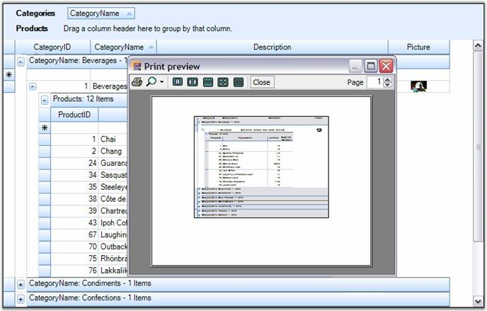
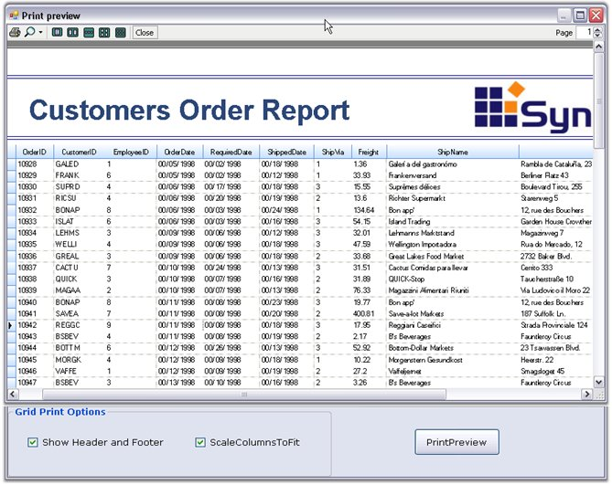

Grid Grouping control supports printing and printing previews through the .NET Framework classes System.Windows.Forms.PrintPreviewDialog and System.Windows.Forms.PrintDialog. A derived GridPrintDocument which represents the print document is passed to these classes. This GridPrintDocument implements the printing logic that is needed to print multipage grids.
Code for Print Preview Dialog Box
|
[C#]
GridPrintDocument pd = new GridPrintDocument(this.gridGroupingControl1.TableControl, true); PrintPreviewDialog ppv = new PrintPreviewDialog(); ppv.Document = pd; pd.DefaultPageSettings.Landscape = true; ppv.ShowDialog(); |
|
[VB.NET]
Dim pd As New GridPrintDocument(Me.gridGroupingControl1.TableControl, True) Dim ppv As New PrintPreviewDialog() ppv.Document = pd pd.DefaultPageSettings.Landscape = True ppv.ShowDialog() |
Code for Print Dialog Box
|
[C#]
GridPrintDocument pd = new GridPrintDocument(this.gridGroupingControl1.TableControl); PrintDialog printDialog = new PrintDialog(); printDialog.Document = pd; pd.DefaultPageSettings.Landscape = true; if (printDialog.ShowDialog() == DialogResult.OK) pd.Print(); |
|
[VB.NET]
Dim pd As New GridPrintDocument(Me.gridGroupingControl1.TableControl) Dim printDialog As New PrintDialog() printDialog.Document = pd pd.DefaultPageSettings.Landscape = True If printDialog.ShowDialog() = Windows.Forms.DialogResult.OK Then pd.Print() End If |
Given below are sample screen shots.

Figure 406: Grid with Print Dialog Box

Figure 407: Grid with Print Preview Dialog Box
 Note: For more details, refer the following
browser sample:
Note: For more details, refer the following
browser sample:
<Install Location>\Syncfusion\EssentialStudio\[Version Number]\Windows\Grid.Grouping.Windows\Samples\2.0\Print\Print Grid Demo
Advanced printing
Grid Grouping control supports printing of entire grid's column in a single page. Also, it allows the user to specify the header and footer for the page to be printed. This can be achieved by using the GridPrintDocumentAdv class. Column can be specified to fit in a single page by setting ScaleColumnsToFitPage property to true, header and footer can be added using the events DrawGridPrintHeader and DrawGridPrintFooter.
The following code example illustrates setting the header and footer for the page to be printed.
|
[C#]
Syncfusion.GridHelperClasses.GridPrintDocumentAdv pd = new Syncfusion.GridHelperClasses.GridPrintDocumentAdv(this.gridGroupingControl1.TableControl); pd.DefaultPageSettings.Margins = new System.Drawing.Printing.Margins(25, 25, 25, 25);
// Set header and footer height. pd.HeaderHeight = 70; pd.FooterHeight = 50;
// Scale columns to fit page. pd.ScaleColumnsToFitPage = true;
// Handle the following events to draw the header/footer. pd.DrawGridPrintHeader += new Syncfusion.GridHelperClasses.GridPrintDocumentAdv.DrawGridHeaderFooterEventHandler(pd_DrawGridPrintHeader); pd.DrawGridPrintFooter += new Syncfusion.GridHelperClasses.GridPrintDocumentAdv.DrawGridHeaderFooterEventHandler(pd_DrawGridPrintFooter); pd = new GridPrintDocument(this.gridGroupingControl1.TableControl); PrintDialog printDialog = new PrintDialog(); printDialog.Document = pd; pd.DefaultPageSettings.Landscape = true; if (printDialog.ShowDialog() == DialogResult.OK) pd.Print(); |
|
[VB.NET]
Dim pd As Syncfusion.GridHelperClasses.GridPrintDocumentAdv = New Syncfusion.GridHelperClasses.GridPrintDocumentAdv(Me.gridGroupingControl1.TableControl) pd.DefaultPageSettings.Margins = New System.Drawing.Printing.Margins(25, 25, 25, 25)
' Set header and footer height. pd.HeaderHeight = 70 pd.FooterHeight = 50
' Scale columns to fit page. pd.ScaleColumnsToFitPage = True
' Handle the following events to draw the header/footer. AddHandler pd.DrawGridPrintHeader, AddressOf pd_DrawGridPrintHeader AddHandler pd.DrawGridPrintFooter, AddressOf pd_DrawGridPrintFooter |
For more details, refer the following sample browser.
<Install Location>\Syncfusion\EssentialStudio\[Version Number]\Windows\Grid.Grouping.Windows\Samples\2.0\Print\Print Grid Demo

Figure 408: Header and Footer set for page to be Printed